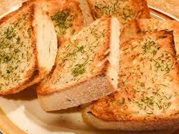

Toasted Garlic Bread

Description
A quick and easy to make side dish that will complement any Italian meal.
Optional melted mozzarella is highly recommended.
Ingredients
- 1 loaf of Italian bread
- 5 tablespoons butter, softened
- 3 cloves garlic, crushed
- 2 teaspoons extra virgin olive oil
- 1 teaspoon dried oregano
- salt and pepper to taste
- 1 cup shredded mozzarella cheese
Steps
- Gather all ingredients.
- Set an oven rack about 6 inches from the oven's heatsource
and preheat the oven's broiler. Cut loaf into ten 1-inch slices.
- Mix butter, garlic, oil, oregano, salt, and pepper together in a bowl.
Spread butter mixture on one side of each slice of bread.
Arrange bread slices, butter-side up, in a single layer on a baking sheet.
- Cook until slightly brown, checking frequently so they do not burn.
About 3 minutes.
- Top bread slices with cheese and return to oven until cheese
is slightly brown and melted, about 2 minutes.
- Serve hot.